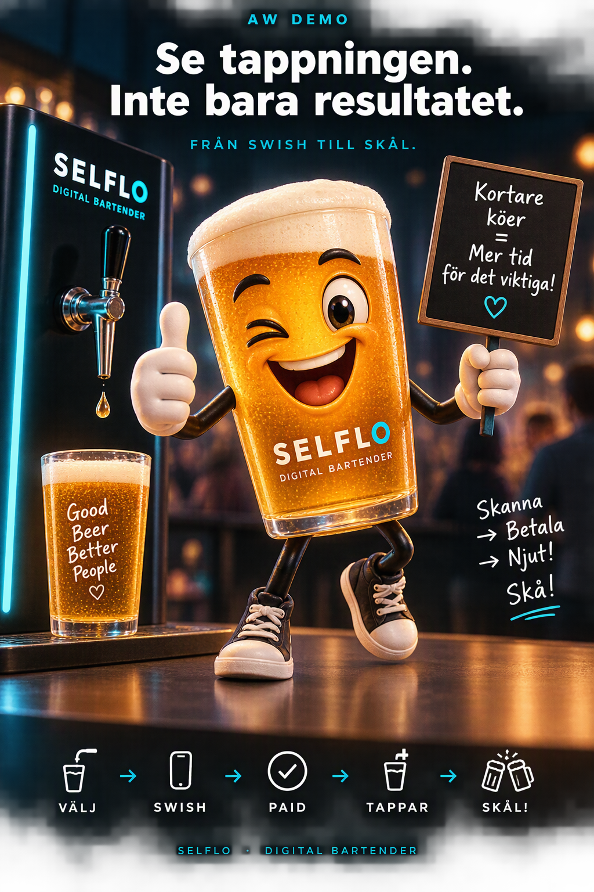

En digital självbetjäningsupplevelse från val och betalning till färdig dryck.
UPPTÄCK SELFLO↓Välj 25, 33 eller 50 cl direkt på SELFLO-skärmen.
Skanna Swish QR-koden med mobilen och godkänn betalningen.
Se glaset fyllas medan SELFLO tappar vald mängd.
Rätt mängd. Redo att serveras. Skål! 🍺

I demonstrationen följer kunden hela flödet: val, betalning, godkännande, tappning och avslut.
Fler beställningar kan hanteras utan att varje order behöver passera samma manuella flaskhals.
SELFLO är tänkt för miljöer där efterfrågan kommer i tydliga och intensiva försäljningstoppar.
Vald mängd, betalningsstatus och maskinstyrning kopplas ihop innan tappning tillåts.
Val, Swish, tappning och färdig servering sker i samma enkla digitala kundresa.
SELFLO utgår från ett verkligt serveringsproblem: många kunder vill köpa under samma korta tidsfönster, medan traditionell serveringskapacitet lätt blir flaskhalsen.
SELFLO utvecklas som en kombination av kundgränssnitt, betalningsintegration, maskinstyrning och volymstyrd tappning.
SELFLO utvecklas just nu som en fysisk och digital prototyp. Nästa steg är att testa hur konceptet fungerar i verkliga serveringsmiljöer.